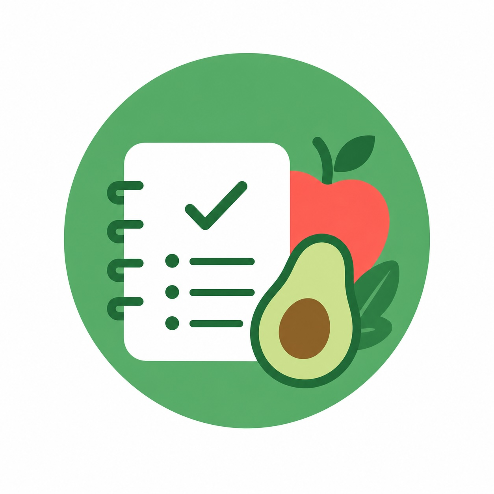

Food Log is a personal meal and drink tracker. It logs what you eat and drink to your own Google Sheet, with optional photos saved to your own Google Drive.
Your data lives in your own Google account: one spreadsheet the app creates for you, and one Drive folder for photos. The app never sees any other files in your Drive.
Food Log uses Google's drive.file OAuth scope, which only grants access to files the app itself creates. It cannot read, modify, or delete any other files in your Drive. Authentication happens through Google's standard OAuth flow.
Food Log is a personal-use project, not a commercial product. See the privacy policy for details on data handling.